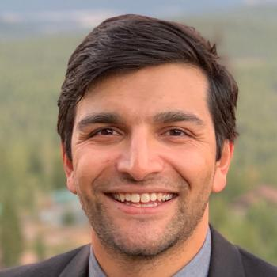
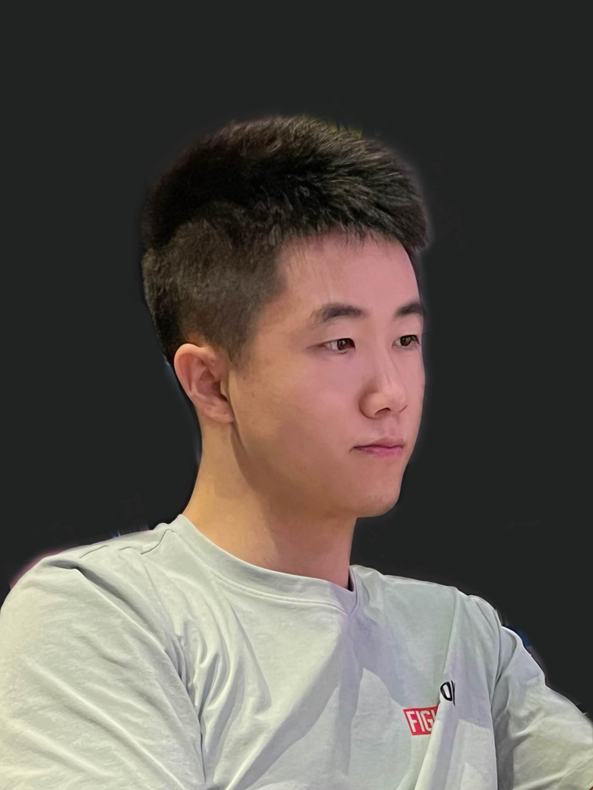
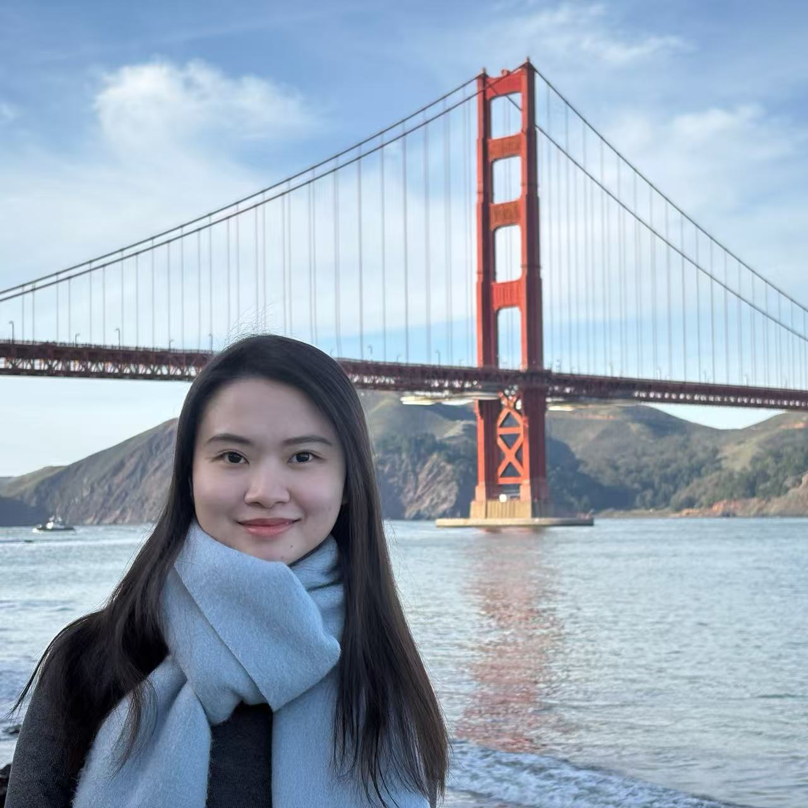

News
- Workshop website launched with Call-for-Papers and speakers announced.
- Paper submission site is now open via OpenReview.
- Paper submission deadline: August 20, 2025 (Extended to August 30, 2025).
- Workshop scheduled for October 20, 2025 in Honolulu, Hawaii.
Introduction
Generative AI is transforming biomedical image analysis, creating new possibilities and solutions for healthcare. Although generative AI has significantly advanced medical imaging and diagnostics, developing reliable, clinically applicable systems remains challenging due to interpretability concerns, data quality issues, and regulatory compliance.
This workshop explores how generative AI is reshaping biomedical image analysis across three critical areas:
(1) Data Synthesis and Clinical Modeling: Generative models revolutionize training data creation and disease simulation by producing anatomically accurate images, addressing class imbalances, and enabling cross-modal image synthesis (e.g., MRI to CT). These models also simulate disease progression, empowering clinicians to visualize patient outcomes and evaluate treatment effectiveness. Additionally, conditional generative models enhance segmentation accuracy, while synthetic lesion generation enriches training datasets. Ensuring clinical reliability, reducing biases, and meeting regulatory standards remain essential challenges.
(2) Multimodal Learning: Integrating generative AI with large language models (LLMs) combines visual data with insights from medical reports and electronic health records, enabling systems to extract crucial information and generate informative summaries. This fusion enhances clinical communication and supports improved decision-making. However, significant challenges, such as interpretability, mitigating AI-generated inaccuracies, and aligning with clinical standards, must be addressed.
(3) Workflow Automation: Generative AI streamlines medical imaging workflows from acquisition to diagnosis. Intelligent AI agents automate tasks such as routine medical inspections, automated image analysis, and automated delineation of radiotherapy target areas. These advancements can significantly improve efficiency and consistency in clinical practices. Nevertheless, challenges related to regulatory approval, data privacy, and model reliability persist.
Our workshop brings together experts from computer vision, healthcare, and AI research to address these challenges and opportunities in applying generative AI to biomedical image analysis through interdisciplinary collaboration.
Invited Speakers
Dimitris N. Metaxas |
Kun-Hsing Yu |
| Distinguished Professor Rutgers University |
Associate Professor Harvard Medical School |
 |
 |
Daguang Xu |
Akshay Chaudhari |
| Principal Research Scientist NVIDIA |
Assistant Professor Stanford University |
Call for Papers
We invite submissions of full-length papers (up to 8 pages excluding the references, 4-6 pages recommended) for workshop proceedings. The topics covered in the workshop include but are not limited to:
- Medical Image Generation & Synthesis
- Vision-Language Foundation Models
- Clinical Workflow Intelligence
- Generative Disease Dynamics
- Trustworthy Medical AI
- LLM-Enhanced Clinical Reasoning
- Distributed Medical Imaging Systems
- Generative Surgical Simulation
- Multimodal learning for medical image analysis
- AI agents for healthcare applications
Submission Instructions
All submissions should follow the ICCV 2025 instructions. The papers will be subject to a double-blind review process, i.e. authors must not identify themselves on the submitted papers. The reviewing process is single-stage without rebuttals.
Submit via OpenReview
- Online Submission System: OpenReview
- Submission Format: official ICCV 2025 template (double column; up to 8 pages, 4-6 pages recommended, excluding references).
All authors submitting a paper are required to have an OpenReview profile. New profiles with institutional emails are automatically activated, while those without one undergo a moderation process, taking up to two weeks.
Timeline Table (11:59 PM, Pacific Time)
- Paper submission open: June 15, 2025
- Paper submission deadline: August 20, 2025
- Extended deadline: August 30, 2025
- Notification to authors: September 20, 2025
- Camera-ready deadline: October 10, 2025
- Workshop: October 20, 2025
Workshop Schedule
Half-day workshop schedule (Room 316 B):
| Time (HST / PST / EST) | Event |
| 09:00 – 09:10 12:00 – 12:10 / 3:00 – 3:10 |
Opening remarks and introduction |
| 09:10 – 09:40 12:10 – 12:40 / 3:10 – 3:40 |
Invited Talk 1: Akshay Chaudhari (Stanford University) |
| 09:40 – 10:10 12:40 – 1:10 / 3:40 – 4:10 |
Invited Talk 2: Kun-Hsing Yu (Harvard Medical School) |
| 10:10 – 10:40 1:10 – 1:40 / 4:10 – 4:40 |
Oral Session 1:
Emmanuelle Bourigault (Oxford)
Oral Session 2: Mainak Biswas (Indian Institute of Science) |
| 10:40 – 11:10 1:40 – 2:10 / 4:40 – 5:10 |
Coffee break & poster session |
| 11:10 – 11:40 2:10 – 2:40 / 5:10 – 5:40 |
Invited Talk 3: Dimitris N. Metaxas (Rutgers University) |
| 11:40 – 12:10 2:40 – 3:10 / 5:40 – 6:10 |
Invited Talk 4: Daguang Xu (NVIDIA) |
| 12:10 – 12:15 3:10 – 3:15 / 6:10 – 6:15 |
Closing remarks |
Workshop Organizers
Yuanfeng Ji |
Zhongying Deng |
Xiangde Luo |
| Postdoctoral Researcher Stanford University |
Postdoctoral Researcher University of Cambridge |
Postdoctoral Researcher Stanford University |
|  |  | |
Jin Ye |
Xiyue Wang |
Dan Lin |
| Ph.D. Student Monash University |
Postdoctoral Researcher Stanford University |
Postdoctoral Researcher Cornell University |
 |
||
Junjun He |
Jianfei Cai |
Angelica I Aviles-Rivero |
| Researcher Shanghai AI Laboratory |
Professor Monash University |
Assistant Professor Tsinghua University |
Carola-Bibiane Schönlieb |
Shaoting Zhang |
Ping Luo |
| Professor University of Cambridge |
Principal Scientist Shanghai AI Laboratory |
Associate Professor University of Hong Kong |
Sponsors
Sponsor information will be available soon.
Contact Info
E-mail: yfj@stanford.edu, zd294@cam.ac.uk
Acknowledgement
Website template borrowed from: https://rhobin-challenge.github.io/